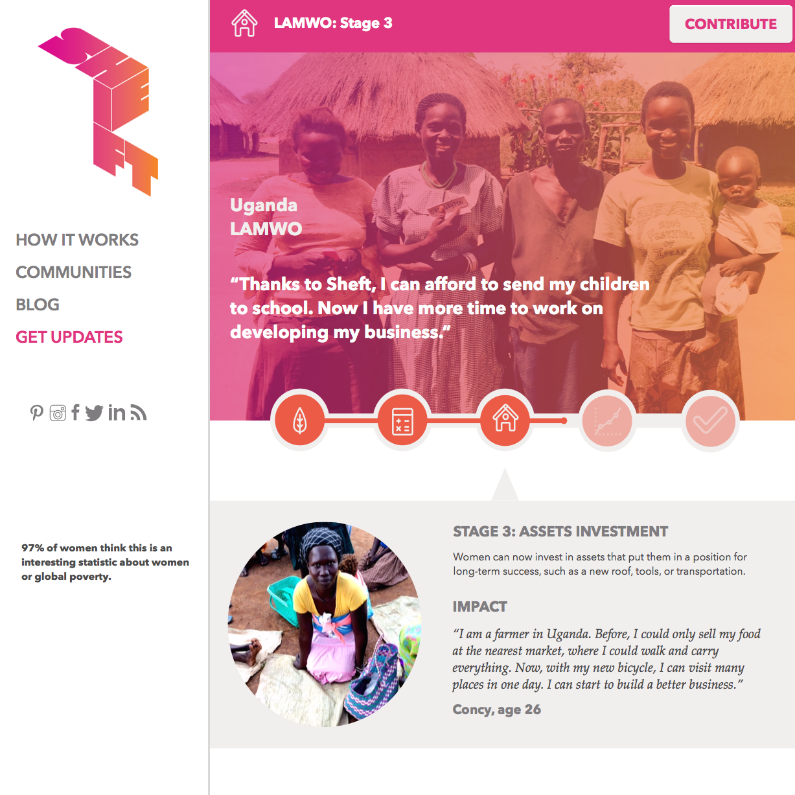
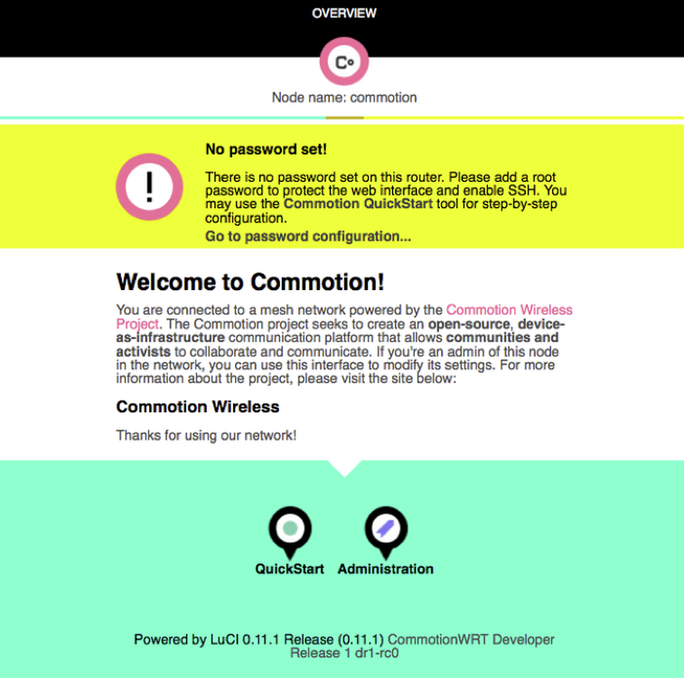
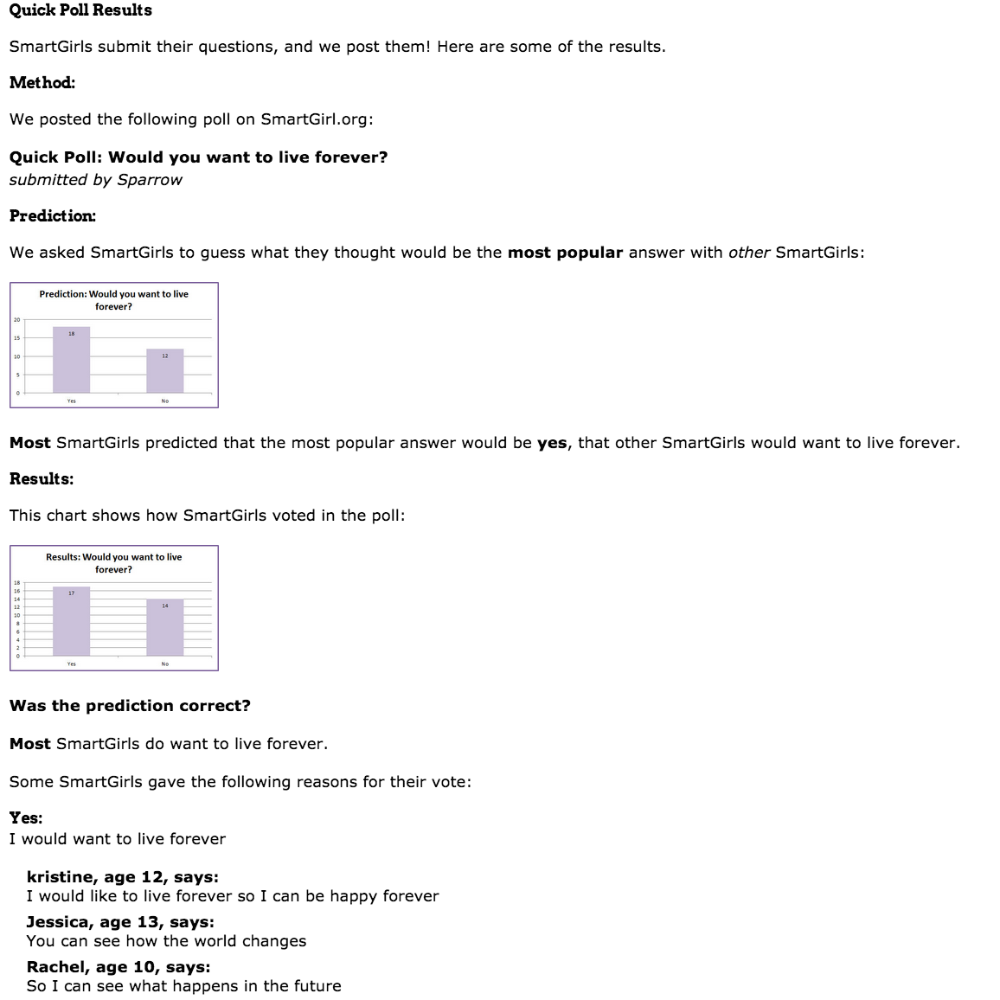

Shift is an online donation platform that gives money directly to ultra-poor women in villages in Uganda.
The consulting project involved conducting empathy interviews and ideation sessions based on Stanford's d.school design process, which resulted in a new brand name and style guide.
With the new look, we created mockups that would focus on women's strength and progress, a radical change from traditional narratives about poverty that play on pity.
Commotion Wireless is a community-focused organization that creates router software and documentation to set up mesh networks.
We wanted to create a framework for user testing that would help guide decisions on the front end design. In this project, we tested the QuickStart setup wizard for beginners.
We were able to create a low-cost, agile solution that involved all stakeholders in virtual observation of the users as they attempted different tasks.
SmartGirl is an outreach website for middle schools inherited by the University of Michigan. Our goal was to create a fun, interesting platform for girls to engage with statistics and mathematics.
We ran focus groups and surveys in order to guide the rebranding and redesign of the site. We converted the site from a tables-based layout to a flexible CSS layout, and we added interactive features such as comments. We were able to build a loyal base of volunteers who regularly contributed fresh content throughout the site.
Although SmartGirl hasn't had a maintainer for several years, the site remains active to this day.
